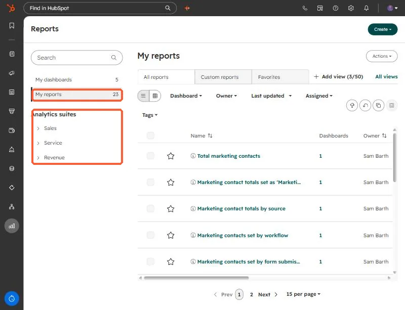
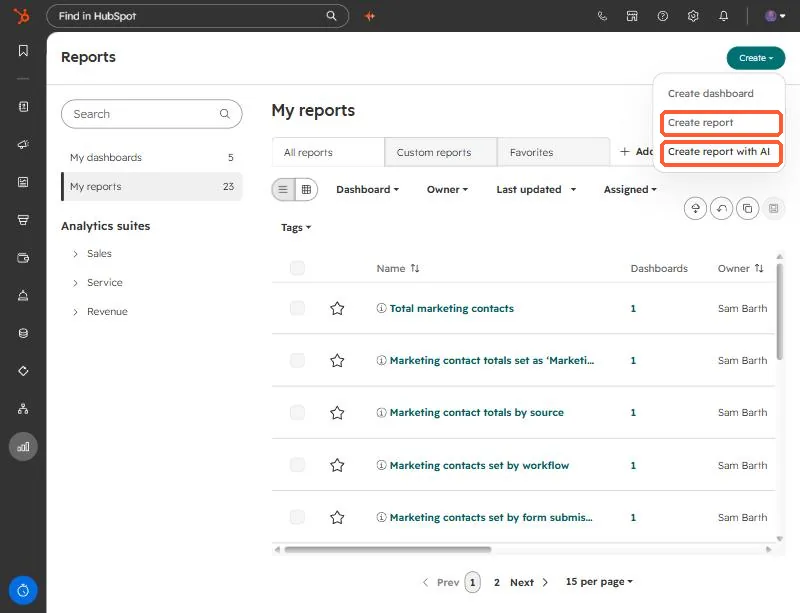
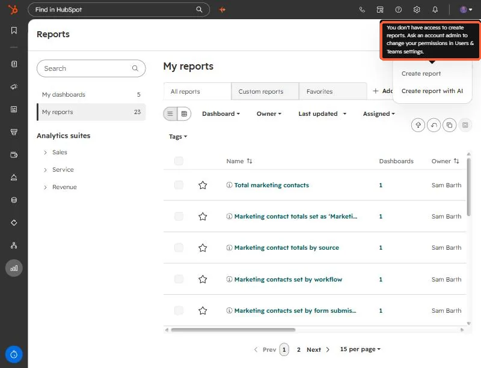

Short answer
Use a single object report when one object (contacts, deals, tickets) answers the question. It cannot join other data, but it updates quickly. Use the custom report builder when you need related objects or activities, accepting slower refreshes. Funnel reports measure stage conversion, and attribution reports are Marketing Hub or Content Hub Enterprise. Custom reports need Professional or Enterprise and create and own permissions.
1. Where reports start
Open Reports. The left menu has your dashboards and reports, plus analytics suites for Sales, Service and Revenue. Prebuilt reports sit here beside the ones you create.


2. The Create menu
The Create button offers Create dashboard, Create report, and Create report with AI.


Report creation depends on permissions, not just subscription. With a user who lacks them, the menu item shows a tooltip and does nothing.


3. The types, in the order to try them
- Single object report. One object only, for example contacts by lifecycle stage. Cannot join other data. It queries the live CRM, so it updates quickly.
- Custom report builder. A primary data source plus related objects or sources, with extra fields and calculations. More capable, more complex, and it refreshes more slowly, about every two hours.
- Funnel reports. Conversion between lifecycle or pipeline stages. Enterprise can also build custom event funnels.
- Attribution reports. Contact, deal create, and revenue attribution. These are Marketing Hub or Content Hub Enterprise, and deal create and revenue attribution need Marketing Hub Enterprise.
- One-to-one email reports. Opens, clicks, and replies over time.
4. Two limits to check first
- The number of custom reports depends on your subscription, and multiple subscriptions of the same tier do not add their limits together.
- Creating a report needs create and own plus edit report permissions in Users and Teams.